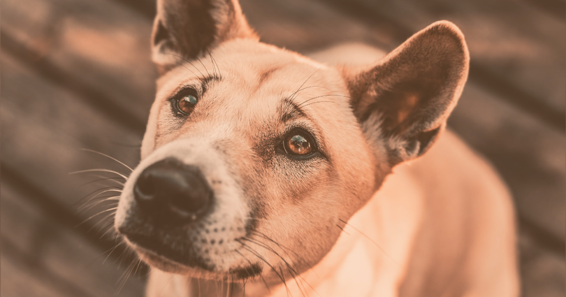

Sobre Nosotros
PetConnect
PetConnect nació como iniciativa de unos estudiantes de pre-grado en el 2023, con el objetivo de buscar un hogar a los animales que necesitaban amor. Somos una organización de adopción de animales, nos dedicamos al rescate y adopción de los mismos para que encuentren un hogar.